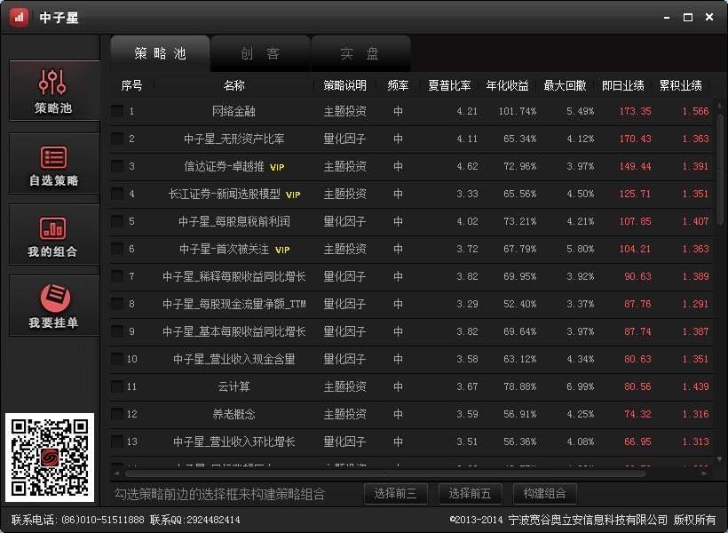
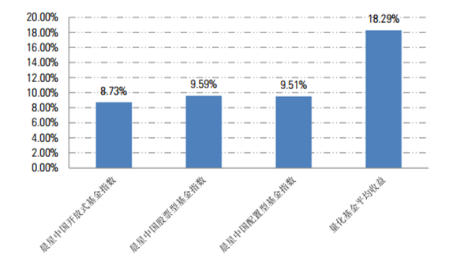
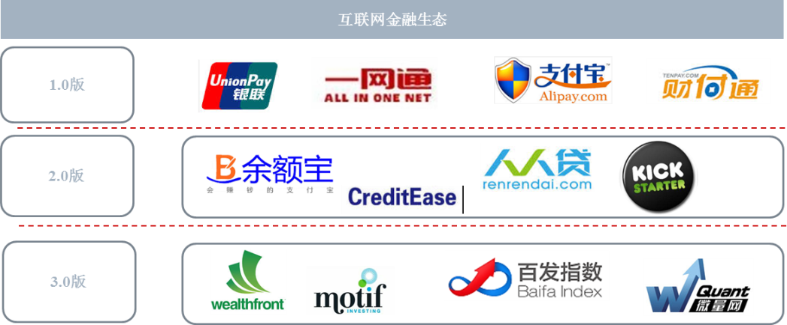
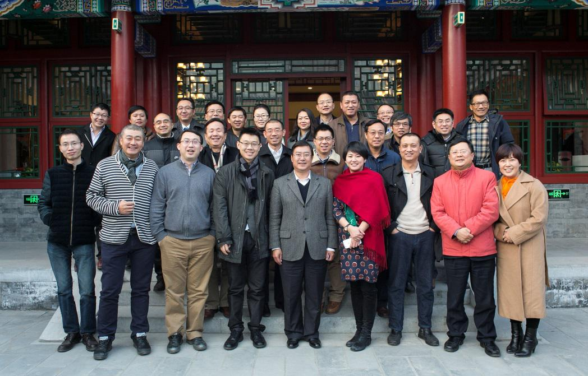

中子星科技，项目致力于打造一个互联网资管生态系统，充分利用互联网技术的优势，连接投资者与专业投资顾问。
中子星科技，项目致力于打造一个互联网资管生态系统，充分利用互联网技术的优势，连接投资者与专业投资顾问。
领投人：
杨大勇，尚诺集团董事长兼CEO，领投人民币150万元，占1%股权
刘志硕领衔大河系创投基金，投资人民币2,250万元，占15%股权。
跟投人：
蝌蚪众筹线上募资50份，15万元/份，其中领投人杨大勇领投10份（即上述人民币150万元投资额），其他跟投人跟投40份，合计持有公司5%股权。
A. 团队优秀的量化投资管理能力。团队核心成员为华尔街资深量化交易专家，对于量化投资有深刻的理解并保持着优秀的交易成绩。
B. 成熟的量化策略评价能力。母公司宽谷奥利安旗下子公司宽奥资产主要从事量化母基金业务，广泛寻找市场中的量化投资团队，以数量化的方法对他们进行评价，筛选其中最优秀的团队进行投资。
C. 完善的量化团队孵化项目。母基金一期已与联想、海尔、明光集团、地方政府等机构签署投资协议，总共募集1亿元人民币，首批种子基金将于十二月底前进行正式投资。母基金二期计划募资总额5亿，杠杆后总额25亿，预期投资50~100家优秀团队，将为中子星引入200~400余个优质策略。
| 项目进展 |
|---|
| 2014年8月 |
| 中子星产品原型开发成功 |
| 2014年9月 |
| 中子星与券商、目基金对接，策略库突破100 |
| 2014年10月 |
| 中子星实现创客功能并引入孵化基金 |
| 2014年11月 |
| 大河汇智按照1.5亿元估值对中子星投资 |
A. 专业客观的策略展示及分析。 中子星依靠完善的数据平台，对每个策略专业客观的展示了实时盘中收益曲线、仓位和损益分析。

B. 自由组合，打造定制化策略
C. 业绩宣传和资金投入
A. 量化投资在海外蓬勃发展。在国外，数量化投资方法已广泛应用。截至2013年，数量化基金管理的总资产达到2156亿美元，相比1988年数量化基金管理的80亿美元资产来说，年均增长速度达到20%。
B. 量化投资在中国刚刚起步。2013年量化投资在中国出现爆发式增长，整个量化投资基金管理规模已达到3千亿元，大部分量化产品取得了15%以上的收益率。预计在2020年，中国量化投资基金总量将超过到6万亿人民币。
美国宾夕法尼亚大学沃顿商学院统计学博士,拥有近十年金融市场经验，曾先后任职瑞士信贷银行全球套利交易部和瑞士银行投资银行部，从事海外市场的证券交易投资及投行业务，管理数亿美元的投资组合并取得良好业绩。
回国后，先后创办信弘天禾资产管理中心和宽谷奥立安信息科技有限公司，从事中国市场的量化投资和金融信息平台建设。
美国范德比尔特大学物理学博士,计算机科学硕士、北京大学物理学士和法律副修。 曾任美国物理学会会员、北京大学物理系学生会主席。
2004年开始任瑞士瑞信银行副总裁，负责瑞银全球指数套利及统计套利策略的设计，套利交易及应用。主持并研发了流动性转换器（研发费用：200万美元），智能订单路由器（研发经费：500万美元），高速订单执行，综合指数套利平台（研发费用：2亿美元）等系列交易管理系统金融工程。
中央财经大学精算科学和英国伦敦City university精算管理双硕士学位。
曾在中国人寿、德勤和国家开发银行从事保险精算、投行、私募股权投资工作，有近十年金融从业经验。
清华大学计算机科学硕士、北京航空航天大学机电一体化学士。
曾先后就职于百度、搜狐等知名互联网公司，拥有近10年互联网行业工作经验。张凡在搜索推荐、位置服务和个性化数据挖掘等方面具有专业技能和丰富经验。
中子星将以量化投资研究、量化团队筛选评级力为核心竞争力，通过量化投资母基金吸引外部优秀投顾团队，以量化资管产品为切入点建设中国最专业的互联网理财平台：
聚财： 筛选最优秀的团队，为投资者提供优质资管产品。
融智： 发挥平台优势，以“母基金”吸引外部优秀投顾团队进行合作。
共振： 利用互联网金融模式使人才与资产共振，建立大资管平台
筹集计划：
2015年一季度前筹集2亿元
每份投资100万元，限额200名
投资回报：
投资者将享受中子星终身VIP尊贵待遇
享受专属策略订制化服务
根据带来的新用户数享受分级减免管理费乃至利润分享
每位投资者能够享有中子星平台上10个优质策略的优先认购权
中子星此轮融资人民币3,000万元，估值人民币1.5亿元。
其中人民币750万元投资额在蝌蚪众筹平台进行众筹，其中投资总额将分成50份进行认购，每份15万元，领投人杨大勇领投10份。
杨大勇，尚诺集团董事长兼CEO。
尚诺集团是软银（Soft Bank）旗下基金和新加坡香港的毅园资本Garden投资的金融服务集团，涉及小微金融服务的融资担保、保理和投资业务机构“安家世行”、资产管理机构“安家信诺”。
北京大学经济学院经济学学士，清华大学经管学院数量经济学硕士，人民大学商学院产业经济学博士，中央财经大学金融学院硕士导师。中国互联网金融产业联盟执行理事、秘书长，北京大学金融校友联合会理事。
专注于金融服务特别是互联网金融和大数据领域发展和投资，对文化创意、医疗健康、电子商务也有涉及。支付金融机构“易宝金融”和移动互联网金融服务机构“亲亲小贷”董事，供应链金融数据机构“金电联行”顾问。
刘志硕，天使投资人。
毕业于哈尔滨工业大学，中国经济50人论坛企业家理事，首届中关村企业家咨询委员会委员，北京市青联常委。
加拿大注册天使投资人，作为个人天使投资了畅游（CYOU US）、拉卡拉、欧地安（为闽福发A收购）、广厦网络（430128 CH）等14家公司，参股搜狐网络（SOHU US）、学大教育（XUE US）等二十余家公司，同时参与了多个创业投资基金包括启迪日新、祟德宏信、北软汇智、天津汇智、创新谷，大河融科、英诺融科等。
估值:
计划融资人民币3,000万元人民币，出让公司股权20%，投后估值人民币1.5亿元。
领投人:
杨大勇，尚诺集团董事长兼CEO，领投人民币150万元，占1%股权。
刘志硕领衔大河系创投基金，投资人民币2,250万元，占15%。
跟投人:
蝌蚪众筹线上募资50份，15万元/份，其中领投人杨大勇领投10份（即上述人民币150万元投资额），其他跟投人跟投40份，合计持有公司5%股权。
如果说简单的“网银”是互联网金融1.0版，余额宝、P2P贷款等平台类产品是互联网金融2.0版，那么结合大数据、云计算等技术与一身的互联网证券投资则开启了互联网金融3.0时代。
Motif Investing是一家来自美国圣马特奥的公司，其产品Motif和Google+的分享功能类似，用户可以自行选择想要分享的圈子，此外，它能基于当下热门和时效性的主题生成一系列股票投资组合，为用户提供投资组合购买的参考。网站完全透明，每一个投资理念或者是主题可以都可以基于几大指数进行比较。用户可以基于某一主题的多支股票进行定制，可以清楚地看到Motif社区是否已经买进了某一主题的股票，也可以修改购买的股票和对权重进行修改。用户也可以选择不使用社交元素，即对特定的投资理念不进行社交分享。
Motif由微软前高管哈迪普·瓦利亚(Hardeep Walia)和套保基金经理塔里克·希拉利(Tariq Hilaly)联合打造。 近日获得高盛美元3,500万的D轮融资，开始全球扩张。
2014年12月11日，中子星项目在金融客咖啡路演，吸引了金融客咖啡发起人和五道口金融学院EMBA的朋友们，中关村管委会领导及中关村股权交易中心领导也来考察指导。
